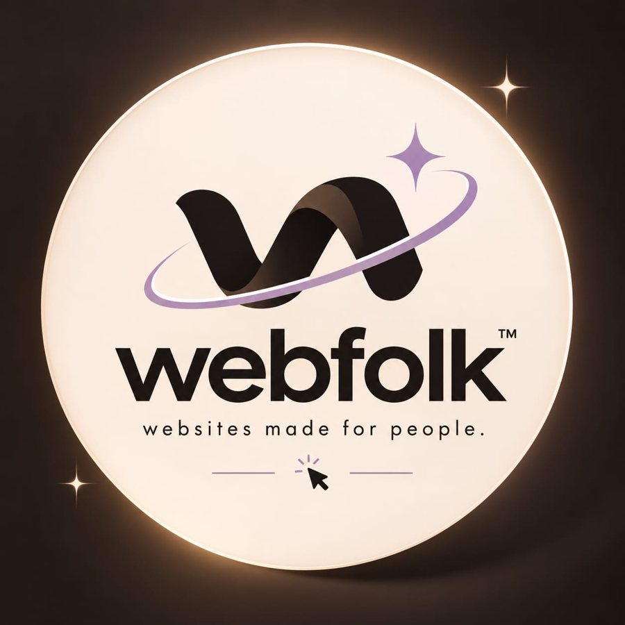

Webfolk identity
A ribbon-shaped W, a lavender orbit and a small spark. The mark stands for connection: people, ideas and the web held together in one loop.
- Service
- Logo design
- Palette
- Espresso, lavender, blush
- Type
- Jost with handwritten accents